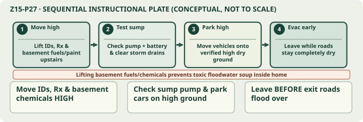

Z15-P27 · Disaster scenarios · New manuscript
Prepare low-lying homes proactively before spring snowmelt flood crests
Reduce catastrophic basement damage and protect essential household records and utilities during predictable multi-day river rises.
When it applies · Homes in floodplains or low drainage basins with 24-to-72-hour Flood Watch/Warning lead times.
Equipment · Tested sump pump + battery backup, waterproof document pouch, utility shutoff map, sandbag guidance from county if applicable, and early evacuation plan.

Actions
- Move vital documents, irreplaceable photos, medications, electronics, and hazardous basement chemicals (paints, fuels, pesticides—so floodwaters do NOT turn into toxic chemical soup!) up to upper floors well before flood crests arrive.[D05, D16, U04]
- Test sump pumps and battery backups, clear storm drains/gutters safely, elevate or unplug lower-level appliances if dry, and follow official municipal guidance on sandbagging or utility shutoffs ONLY while access roads remain completely dry and open.[D05, U01]
- Park vehicles on verified high dry ground ahead of crest and evacuate early if authorities issue voluntary or mandatory flood evacuation orders.[D05, D14]
Failure recognition · Leaving 5-gallon gas cans, lawn pesticides, and vital home deeds on a basement shelf until floodwater lifts them and contaminates the entire house.[D05, D16]
Verify · Confirm basement chemicals/valuables moved high, sump pump checked, cars parked high, and early departure timed before roads flood.[D05, D16]
Stop or change course · Rising water entering the basement or approaching exit roads halts all home-prep tasks immediately—evacuate safely to high ground.[D05, D14]
Evidence and editorial notes
- D05 · FEMA / Ready.gov · Floods (current web edition)
- Section: Floods: During; Turn Around, Don’t Drown · Conditions: Flooded roads or trails, flood alert, or post-flood re-entry
Support: Move to safe higher ground when directed, never walk or drive into floodwater, and respect closures and re-entry restrictions.
Limitations: Depth examples are warning illustrations, never safe entry thresholds. Trapped or submerged vehicles require emergency help and scene-specific response. · Conflicting evidence: See A02 claim audit for boundaries.
Editorial note: Core flood evacuation, water-avoidance, and safe re-entry evidence. · Specialist reviewer: Emergency management and flood hydrology
Primary source · checked 2026-11-24 - D14 · FEMA / Ready.gov · Evacuation (current web edition)
- Section: Before, during and after evacuation · Conditions: Official evacuation or a preplanned, safely accessible departure
Support: Prepare a go-kit, routes, transport and a contact plan. Follow official routes and use the locally indicated registration or reunification channel.
Limitations: Shelter accessibility and animal accommodations require local and ADA guidance; no fixed national website is assumed. · Conflicting evidence: See A02 claim audit for boundaries.
Editorial note: Core evacuation execution and accountability evidence in Z15. · Specialist reviewer: Emergency management and transportation safety
Primary source · checked 2026-11-24 - D16 · FEMA / Ready.gov · Financial Preparedness and Vital Records (current web edition)
- Section: Vital Documents, Cash Reserves, Insurance, and Post-Disaster Recovery · Conditions: 30-day resilience planning and post-disaster household recovery
Support: Keep waterproof physical and encrypted offline digital copies of IDs, medical lists, prescriptions, insurance policies, deeds, and emergency contacts alongside small-denomination cash so household transactions and assistance claims survive bank/internet outages.
Limitations: Online-only cloud portals are inaccessible during power and telecom outages. · Conflicting evidence: None; critical pillar of prolonged 30-day household resilience.
Editorial note: Grounds documentation, cash liquidity, and recovery staging cards. · Specialist reviewer: Emergency management and household continuity
Primary source · checked 2026-11-24 - U01 · FEMA / Ready.gov · Power Outages (current web edition)
- Section: Power Outages > Preparing and Responding Safely · Conditions: Residential utility electrical outages of hours to days
Support: Keep phones/medical batteries charged, maintain flashlights instead of candles, unplug sensitive appliances to protect against restoration surges, and verify backup power plans for electrically dependent medical devices.
Limitations: Home outage durations vary widely by grid damage; extended winter outages require heat/evacuation contingencies. · Conflicting evidence: None; aligns with CPSC and NFPA.
Editorial note: Establishes household outage baseline and medical-power priority in Z13. · Specialist reviewer: Emergency management and electrical safety
Primary source · checked 2026-11-24 - U04 · FEMA / Ready.gov · Home Fires (current web edition)
- Section: Home Fires > Smoke Alarms, Fire Extinguishers, and Escape Plans · Conditions: Residential fire prevention during outages and supplemental heating
Support: Test smoke alarms monthly on every level and outside sleeping areas, keep two exits clear from every room, store fuels outside living spaces in approved containers, and evacuate immediately if a fire exceeds incipient containment.
Limitations: Candles and improvised indoor flames dramatically elevate outage house-fire deaths. · Conflicting evidence: None; integrates with CPSC CO-alarm rules (C09).
Editorial note: Anchors outage fire prevention, fuel storage, and exit readiness in Z13. · Specialist reviewer: Fire prevention and residential safety
Primary source · checked 2026-11-24
Current assessment · W2C-E014 (2026-11-25) · Open: source scope does not match the claim; escalated: Supported: smoke alarms on every level including the basement; batteries twice a year unless 10-year lithium; replace units every 10 years or per manufacturer; keep flammable liquids away from heat sources; refuel generators outdoors. Limits: Not on the page although U04 asserts them: monthly testing, alarms outside sleeping areas, two exits from every room, storing fuels outside in approved containers, extinguisher thresholds, and grease-fire guidance.
Source lineage · FEMA Ready.gov Floods and MN HSEM; new manuscript · Classification · New manuscript.